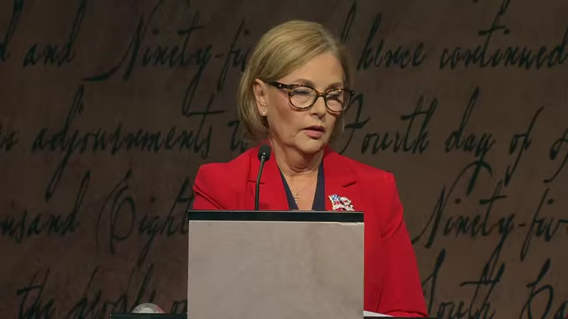
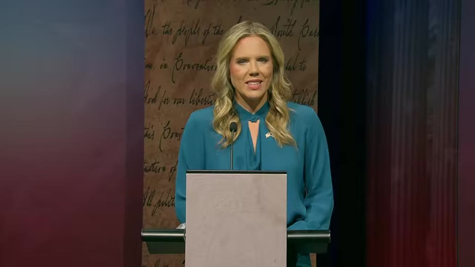
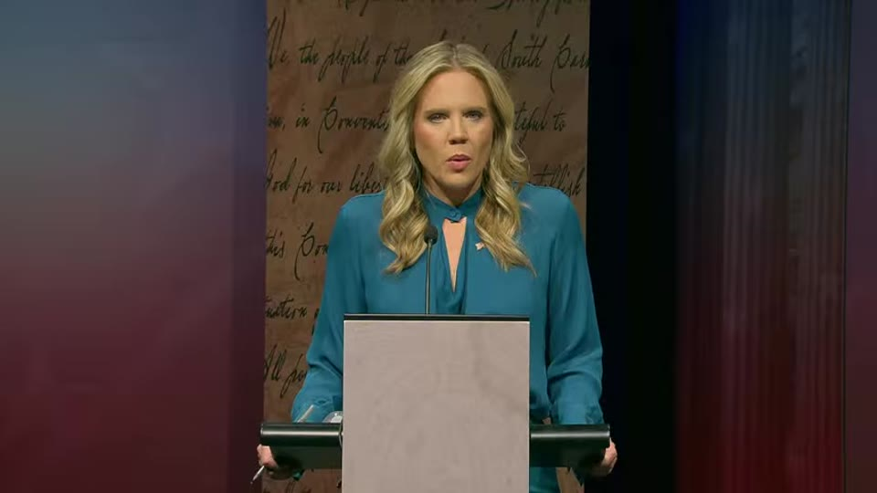
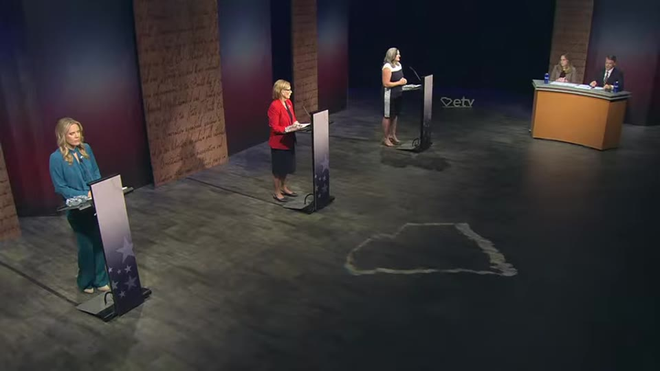

首页 /
视频帧 / U.S. Senate Debate | Election 2026
U.S. Senate Debate | Election 2026JNT_debate_cXE2Ik6YxMg These frames are scene-change samples, not a shot-by-shot edit. Identity comes from an SFace comparison against archive photographs; a frame is shown only when a face cleared the similarity and margin tests for Andrews or Graham.
全部候选人帧 / all candidate frames 安德鲁斯 / Andrews (5) 格雷厄姆 / Graham (1)
00:00:10.400 安德鲁斯 / Andrews · 0.645 · faces 1 · largest 1.2% · JNT_debate_cXE2Ik6YxMg-KF-001
00:06:44.267 格雷厄姆 / Graham · 0.652 · faces 1 · largest 4.2% · JNT_debate_cXE2Ik6YxMg-KF-009
00:07:53.933 安德鲁斯 / Andrews · 0.665 · faces 1 · largest 2.0% · JNT_debate_cXE2Ik6YxMg-KF-01100:10:24.567 安德鲁斯 / Andrews · 0.394 · faces 2 · largest 1.5% · JNT_debate_cXE2Ik6YxMg-KF-014
00:10:42.967 安德鲁斯 / Andrews · 0.647 · faces 1 · largest 2.0% · JNT_debate_cXE2Ik6YxMg-KF-015
00:18:42.300 安德鲁斯 / Andrews · 0.477 · faces 4 · largest 0.1% · JNT_debate_cXE2Ik6YxMg-KF-022另有 16 帧未归属（主持人、观众或未能识别），未在此页展示；逐帧结果见 keyframes_identity.csv 。 / 16 frames set aside as unidentified or other people.